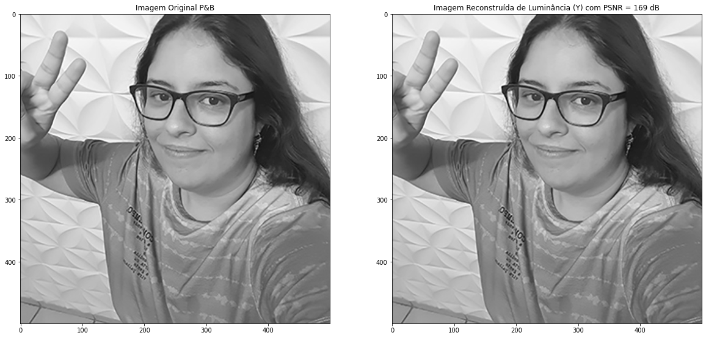
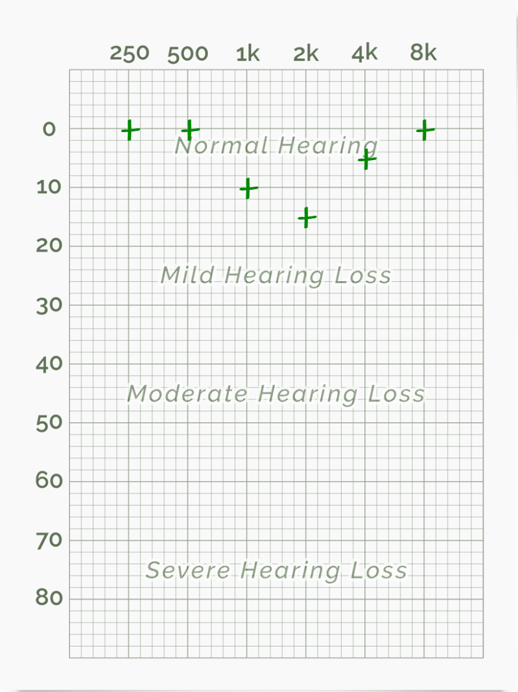
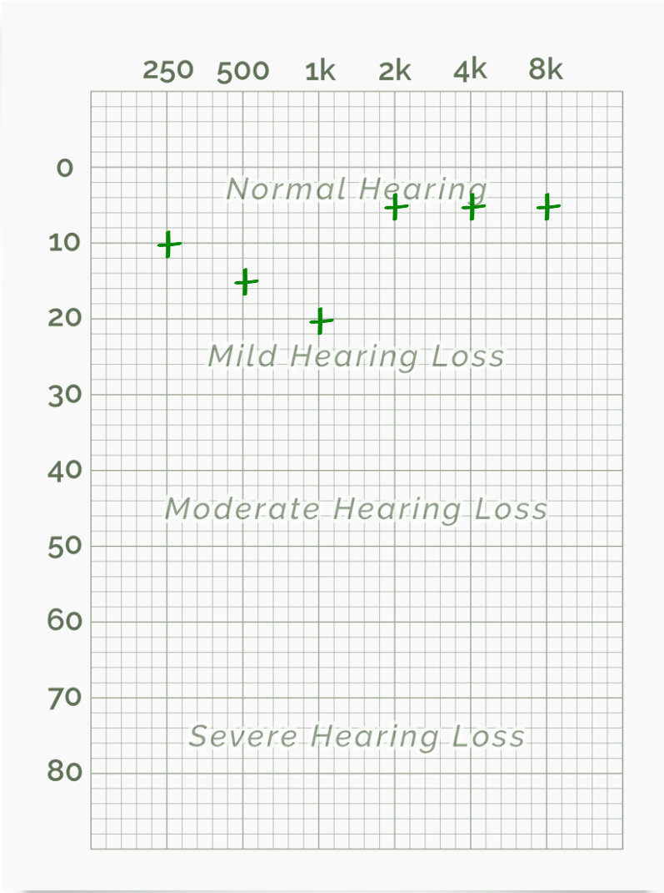
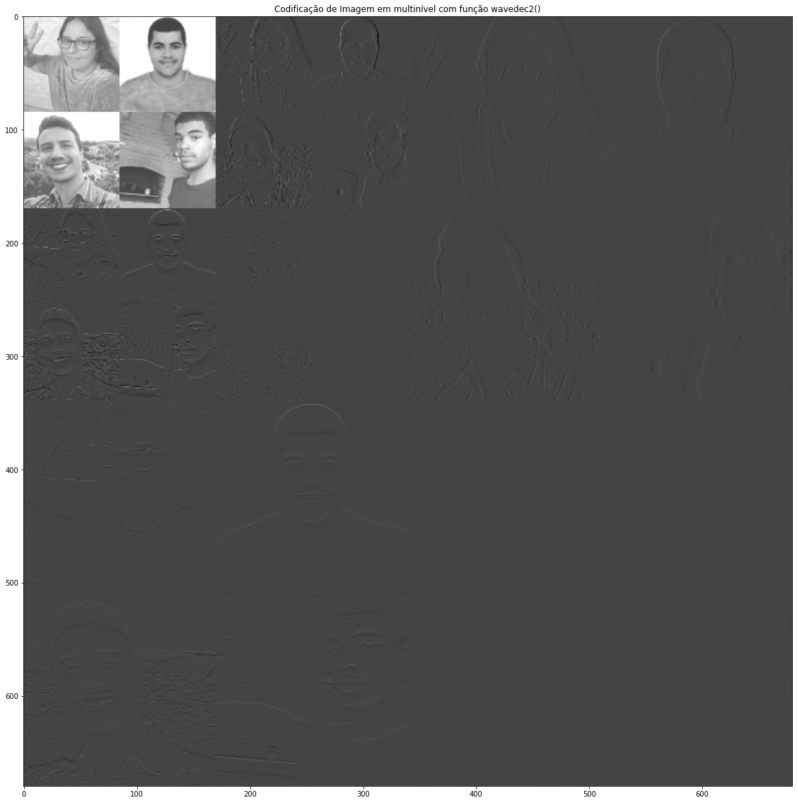
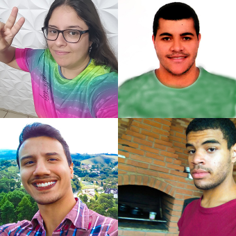
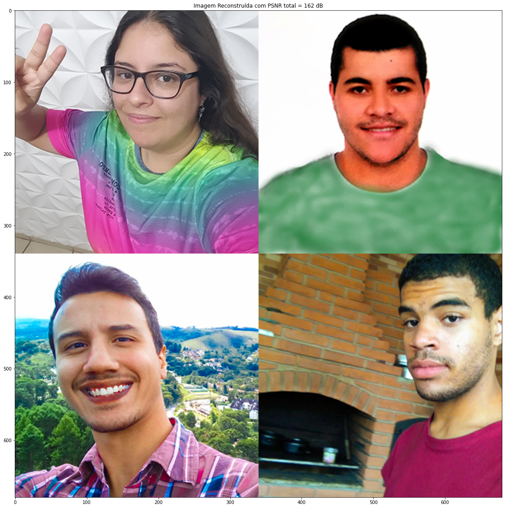

Laboratório de Percepção auditiva
Teste de audiometria - Resultados dos Integrantes
Padrão audiométrico para ambas Orelhas - Gabriel
Áudio do computador
Áudio com fone
Comentários
...
Padrão audiométrico para ambas Orelhas - Jaqueline
Áudio do computador

Áudio com fone

Comentários
Com o fone de ouvido acredito que o resultado esteja mais próximo da realidade se comparado ao teste sem o fone. Percebi que vários sons estavam dificultando executar o teste: cachorros latindo, vozes na rua, vozes vindas de televisão, barulho de carro. Todos esses sons não me incomodam normalmente, mas para esse teste em específico, percebi o quanto de poluição sonora estou inserida e não percebia
Padrão audiométrico para ambas Orelhas - Leonardo
Áudio do computador
Áudio com fone
Comentários
...
Padrão audiométrico para ambas Orelhas - Marcos
Áudio do computador
Áudio com fone
Comentários
Acredito que meu teste no audio do computador não condiz com a realidade, pois senti uma maior facilidade em escutar as freqências mais graves, algo característico do meu sistema de som. Já com os fones de ouvido o resultado foi mais interessante.
Teste de Faixa Audível
Gabriel
Sem fone
fa mín:
fa máx:
Com fone
fa mín:
fa máx:
Celular
fa mín:
fa máx:
Comentários
...
Jaqueline
Sem fone
fa mín: 40 Hz
fa máx: 15.800 Hz
Com fone
fa mín: 22 Hz
fa máx: 16.345 Hz
Celular
fa mín: 139 Hz
fa máx: 14.200 Hz
Comentários
Novamente tive muita interferência de sons externos nos testes sem o fone (celular e computador). O teste com o celular foi o que mais precisei prestar muita atenção para ouvir e as frequências mínima e máxima tiveram os resultados mais discrepantes comparado aos outros
Leonardo
Sem fone
fa mín:
fa máx:
Com fone
fa mín:
fa máx:
Celular
fa mín:
fa máx:
Comentários
...
Marcos
Sem fone
fa mín: 20 Hz
fa máx: 17192 Hz
Com fone
fa mín: 20 Hz
fa máx: 18130 Hz
Celular
fa mín: 80 Hz
fa máx: 17537 Hz
Comentários
No celular, a freqência min e consideravelmente maior que nos outros dispositivos. Possivelmete por ter um auto falante menor, ele não reproduz tão bem as freqências mais baixas.
Apesar do nível do sinal ser sempre o mesmo, quais são as frequências em que o som parece ser muito baixo e, também, onde parece que ele sobe mais?
As frequências agudas, em torno de 400 Hz até 4.000 Hz, a sensação é de que o volume foi ajustado, mais potente
Por que ocorrem as diferenças?
??????
Teste de Mascaramento de Tons Harmônicos
Lab anterior pedaços de codigo apenas
Imagens do Integrantes
Imagens do Integrantes
Taxas de compressão obtidas e a PSNR de cada uma das fotos utilizadas
Cálculo da Relação Sinal Ruído de Pico (PSNR)
Camada Y
RGB
Cálculo da Taxa de Compressão (TC)
Y: N1 → N2
RGB: ORIGINAL → N1